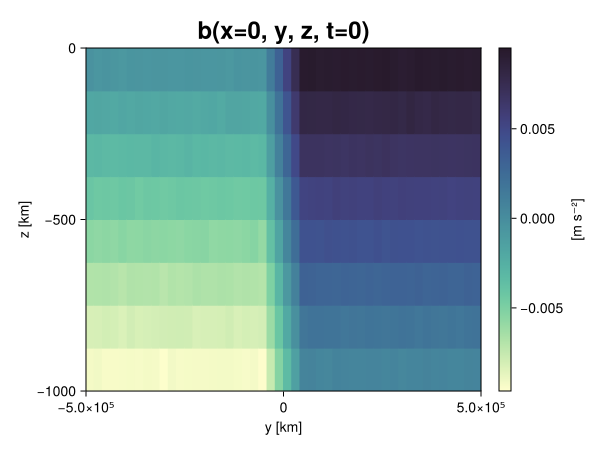
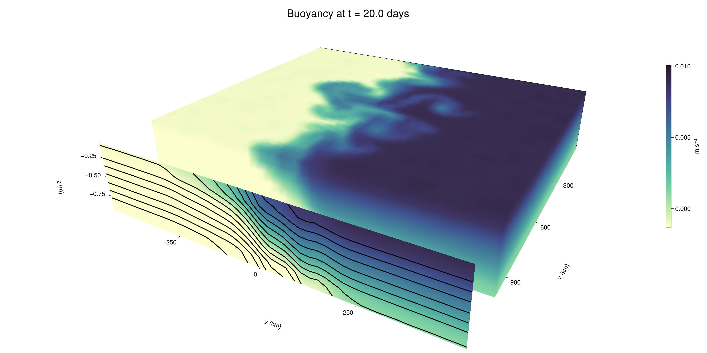

Baroclinic adjustment
In this example, we simulate the evolution and equilibration of a baroclinically unstable front.
Install dependencies
First let's make sure we have all required packages installed.
using Pkg
pkg"add Oceananigans, CairoMakie"using Oceananigans
using Oceananigans.UnitsGrid
We use a three-dimensional channel that is periodic in the x direction:
Lx = 1000kilometers # east-west extent [m]
Ly = 1000kilometers # north-south extent [m]
Lz = 1kilometers # depth [m]
grid = RectilinearGrid(size = (48, 48, 8),
x = (0, Lx),
y = (-Ly/2, Ly/2),
z = (-Lz, 0),
topology = (Periodic, Bounded, Bounded))48×48×8 RectilinearGrid{Float64, Periodic, Bounded, Bounded} on CPU with 3×3×3 halo
├── Periodic x ∈ [0.0, 1.0e6) regularly spaced with Δx=20833.3
├── Bounded y ∈ [-500000.0, 500000.0] regularly spaced with Δy=20833.3
└── Bounded z ∈ [-1000.0, 0.0] regularly spaced with Δz=125.0Model
We built a HydrostaticFreeSurfaceModel with an ImplicitFreeSurface solver. Regarding Coriolis, we use a beta-plane centered at 45° South.
model = HydrostaticFreeSurfaceModel(; grid,
coriolis = BetaPlane(latitude = -45),
buoyancy = BuoyancyTracer(),
tracers = :b,
momentum_advection = WENO(),
tracer_advection = WENO())HydrostaticFreeSurfaceModel{CPU, RectilinearGrid}(time = 0 seconds, iteration = 0)
├── grid: 48×48×8 RectilinearGrid{Float64, Periodic, Bounded, Bounded} on CPU with 3×3×3 halo
├── timestepper: QuasiAdamsBashforth2TimeStepper
├── tracers: b
├── closure: Nothing
├── buoyancy: BuoyancyTracer with ĝ = NegativeZDirection()
├── free surface: ImplicitFreeSurface with gravitational acceleration 9.80665 m s⁻²
│ └── solver: FFTImplicitFreeSurfaceSolver
├── advection scheme:
│ ├── momentum: WENO reconstruction order 5
│ └── b: WENO reconstruction order 5
└── coriolis: BetaPlane{Float64}We start our simulation from rest with a baroclinically unstable buoyancy distribution. We use ramp(y, Δy), defined below, to specify a front with width Δy and horizontal buoyancy gradient M². We impose the front on top of a vertical buoyancy gradient N² and a bit of noise.
"""
ramp(y, Δy)
Linear ramp from 0 to 1 between -Δy/2 and +Δy/2.
For example:
```
y < -Δy/2 => ramp = 0
-Δy/2 < y < -Δy/2 => ramp = y / Δy
y > Δy/2 => ramp = 1
```
"""
ramp(y, Δy) = min(max(0, y/Δy + 1/2), 1)
N² = 1e-5 # [s⁻²] buoyancy frequency / stratification
M² = 1e-7 # [s⁻²] horizontal buoyancy gradient
Δy = 100kilometers # width of the region of the front
Δb = Δy * M² # buoyancy jump associated with the front
ϵb = 1e-2 * Δb # noise amplitude
bᵢ(x, y, z) = N² * z + Δb * ramp(y, Δy) + ϵb * randn()
set!(model, b=bᵢ)Let's visualize the initial buoyancy distribution.
using CairoMakie
# Build coordinates with units of kilometers
x, y, z = 1e-3 .* nodes(grid, (Center(), Center(), Center()))
b = model.tracers.b
fig, ax, hm = heatmap(view(b, 1, :, :),
colormap = :deep,
axis = (xlabel = "y [km]",
ylabel = "z [km]",
title = "b(x=0, y, z, t=0)",
titlesize = 24))
Colorbar(fig[1, 2], hm, label = "[m s⁻²]")
fig
Simulation
Now let's build a Simulation.
simulation = Simulation(model, Δt=20minutes, stop_time=20days)Simulation of HydrostaticFreeSurfaceModel{CPU, RectilinearGrid}(time = 0 seconds, iteration = 0)
├── Next time step: 20 minutes
├── Elapsed wall time: 0 seconds
├── Wall time per iteration: NaN days
├── Stop time: 20 days
├── Stop iteration : Inf
├── Wall time limit: Inf
├── Callbacks: OrderedDict with 4 entries:
│ ├── stop_time_exceeded => Callback of stop_time_exceeded on IterationInterval(1)
│ ├── stop_iteration_exceeded => Callback of stop_iteration_exceeded on IterationInterval(1)
│ ├── wall_time_limit_exceeded => Callback of wall_time_limit_exceeded on IterationInterval(1)
│ └── nan_checker => Callback of NaNChecker for u on IterationInterval(100)
├── Output writers: OrderedDict with no entries
└── Diagnostics: OrderedDict with no entriesWe add a TimeStepWizard callback to adapt the simulation's time-step,
conjure_time_step_wizard!(simulation, IterationInterval(20), cfl=0.2, max_Δt=20minutes)Also, we add a callback to print a message about how the simulation is going,
using Printf
wall_clock = Ref(time_ns())
function print_progress(sim)
u, v, w = model.velocities
progress = 100 * (time(sim) / sim.stop_time)
elapsed = (time_ns() - wall_clock[]) / 1e9
@printf("[%05.2f%%] i: %d, t: %s, wall time: %s, max(u): (%6.3e, %6.3e, %6.3e) m/s, next Δt: %s\n",
progress, iteration(sim), prettytime(sim), prettytime(elapsed),
maximum(abs, u), maximum(abs, v), maximum(abs, w), prettytime(sim.Δt))
wall_clock[] = time_ns()
return nothing
end
add_callback!(simulation, print_progress, IterationInterval(100))Diagnostics/Output
Here, we save the buoyancy, $b$, at the edges of our domain as well as the zonal ($x$) average of buoyancy.
u, v, w = model.velocities
ζ = ∂x(v) - ∂y(u)
B = Average(b, dims=1)
U = Average(u, dims=1)
V = Average(v, dims=1)
filename = "baroclinic_adjustment"
save_fields_interval = 0.5day
slicers = (east = (grid.Nx, :, :),
north = (:, grid.Ny, :),
bottom = (:, :, 1),
top = (:, :, grid.Nz))
for side in keys(slicers)
indices = slicers[side]
simulation.output_writers[side] = JLD2OutputWriter(model, (; b, ζ);
filename = filename * "_$(side)_slice",
schedule = TimeInterval(save_fields_interval),
overwrite_existing = true,
indices)
end
simulation.output_writers[:zonal] = JLD2OutputWriter(model, (; b=B, u=U, v=V);
filename = filename * "_zonal_average",
schedule = TimeInterval(save_fields_interval),
overwrite_existing = true)JLD2OutputWriter scheduled on TimeInterval(12 hours):
├── filepath: ./baroclinic_adjustment_zonal_average.jld2
├── 3 outputs: (b, u, v)
├── array type: Array{Float64}
├── including: [:grid, :coriolis, :buoyancy, :closure]
├── file_splitting: NoFileSplitting
└── file size: 30.7 KiBNow we're ready to run.
@info "Running the simulation..."
run!(simulation)
@info "Simulation completed in " * prettytime(simulation.run_wall_time)[ Info: Running the simulation...
[ Info: Initializing simulation...
[00.00%] i: 0, t: 0 seconds, wall time: 21.098 seconds, max(u): (0.000e+00, 0.000e+00, 0.000e+00) m/s, next Δt: 20 minutes
[ Info: ... simulation initialization complete (23.141 seconds)
[ Info: Executing initial time step...
[ Info: ... initial time step complete (17.650 seconds).
[06.94%] i: 100, t: 1.389 days, wall time: 32.187 seconds, max(u): (1.275e-01, 1.113e-01, 1.483e-03) m/s, next Δt: 20 minutes
[13.89%] i: 200, t: 2.778 days, wall time: 994.824 ms, max(u): (2.191e-01, 1.596e-01, 1.711e-03) m/s, next Δt: 20 minutes
[20.83%] i: 300, t: 4.167 days, wall time: 898.966 ms, max(u): (2.865e-01, 2.026e-01, 1.835e-03) m/s, next Δt: 20 minutes
[27.78%] i: 400, t: 5.556 days, wall time: 941.504 ms, max(u): (3.532e-01, 2.812e-01, 1.693e-03) m/s, next Δt: 20 minutes
[34.72%] i: 500, t: 6.944 days, wall time: 831.333 ms, max(u): (4.253e-01, 3.715e-01, 1.773e-03) m/s, next Δt: 20 minutes
[41.67%] i: 600, t: 8.333 days, wall time: 892.714 ms, max(u): (5.282e-01, 5.802e-01, 2.206e-03) m/s, next Δt: 20 minutes
[48.61%] i: 700, t: 9.722 days, wall time: 932.574 ms, max(u): (7.380e-01, 9.298e-01, 3.790e-03) m/s, next Δt: 20 minutes
[55.56%] i: 800, t: 11.111 days, wall time: 877.275 ms, max(u): (1.066e+00, 1.072e+00, 4.298e-03) m/s, next Δt: 20 minutes
[62.50%] i: 900, t: 12.500 days, wall time: 943.031 ms, max(u): (1.362e+00, 1.233e+00, 4.611e-03) m/s, next Δt: 20 minutes
[69.44%] i: 1000, t: 13.889 days, wall time: 934.329 ms, max(u): (1.388e+00, 1.219e+00, 4.099e-03) m/s, next Δt: 20 minutes
[76.39%] i: 1100, t: 15.278 days, wall time: 946.314 ms, max(u): (1.281e+00, 1.345e+00, 4.226e-03) m/s, next Δt: 20 minutes
[83.33%] i: 1200, t: 16.667 days, wall time: 876.813 ms, max(u): (1.440e+00, 1.480e+00, 4.656e-03) m/s, next Δt: 20 minutes
[90.28%] i: 1300, t: 18.056 days, wall time: 959.811 ms, max(u): (1.467e+00, 1.247e+00, 3.410e-03) m/s, next Δt: 20 minutes
[97.22%] i: 1400, t: 19.444 days, wall time: 948.439 ms, max(u): (1.789e+00, 1.268e+00, 2.411e-03) m/s, next Δt: 20 minutes
[ Info: Simulation is stopping after running for 57.047 seconds.
[ Info: Simulation time 20 days equals or exceeds stop time 20 days.
[ Info: Simulation completed in 57.085 seconds
Visualization
All that's left is to make a pretty movie. Actually, we make two visualizations here. First, we illustrate how to make a 3D visualization with Makie's Axis3 and Makie.surface. Then we make a movie in 2D. We use CairoMakie in this example, but note that using GLMakie is more convenient on a system with OpenGL, as figures will be displayed on the screen.
using CairoMakieThree-dimensional visualization
We load the saved buoyancy output on the top, north, and east surface as FieldTimeSerieses.
filename = "baroclinic_adjustment"
sides = keys(slicers)
slice_filenames = NamedTuple(side => filename * "_$(side)_slice.jld2" for side in sides)
b_timeserieses = (east = FieldTimeSeries(slice_filenames.east, "b"),
north = FieldTimeSeries(slice_filenames.north, "b"),
top = FieldTimeSeries(slice_filenames.top, "b"))
B_timeseries = FieldTimeSeries(filename * "_zonal_average.jld2", "b")
times = B_timeseries.times
grid = B_timeseries.grid48×48×8 RectilinearGrid{Float64, Periodic, Bounded, Bounded} on CPU with 3×3×3 halo
├── Periodic x ∈ [0.0, 1.0e6) regularly spaced with Δx=20833.3
├── Bounded y ∈ [-500000.0, 500000.0] regularly spaced with Δy=20833.3
└── Bounded z ∈ [-1000.0, 0.0] regularly spaced with Δz=125.0We build the coordinates. We rescale horizontal coordinates to kilometers.
xb, yb, zb = nodes(b_timeserieses.east)
xb = xb ./ 1e3 # convert m -> km
yb = yb ./ 1e3 # convert m -> km
Nx, Ny, Nz = size(grid)
x_xz = repeat(x, 1, Nz)
y_xz_north = y[end] * ones(Nx, Nz)
z_xz = repeat(reshape(z, 1, Nz), Nx, 1)
x_yz_east = x[end] * ones(Ny, Nz)
y_yz = repeat(y, 1, Nz)
z_yz = repeat(reshape(z, 1, Nz), grid.Ny, 1)
x_xy = x
y_xy = y
z_xy_top = z[end] * ones(grid.Nx, grid.Ny)Then we create a 3D axis. We use zonal_slice_displacement to control where the plot of the instantaneous zonal average flow is located.
fig = Figure(size = (1600, 800))
zonal_slice_displacement = 1.2
ax = Axis3(fig[2, 1],
aspect=(1, 1, 1/5),
xlabel = "x (km)",
ylabel = "y (km)",
zlabel = "z (m)",
xlabeloffset = 100,
ylabeloffset = 100,
zlabeloffset = 100,
limits = ((x[1], zonal_slice_displacement * x[end]), (y[1], y[end]), (z[1], z[end])),
elevation = 0.45,
azimuth = 6.8,
xspinesvisible = false,
zgridvisible = false,
protrusions = 40,
perspectiveness = 0.7)Axis3()We use data from the final savepoint for the 3D plot. Note that this plot can easily be animated by using Makie's Observable. To dive into Observables, check out Makie.jl's Documentation.
n = length(times)41Now let's make a 3D plot of the buoyancy and in front of it we'll use the zonally-averaged output to plot the instantaneous zonal-average of the buoyancy.
b_slices = (east = interior(b_timeserieses.east[n], 1, :, :),
north = interior(b_timeserieses.north[n], :, 1, :),
top = interior(b_timeserieses.top[n], :, :, 1))
# Zonally-averaged buoyancy
B = interior(B_timeseries[n], 1, :, :)
clims = 1.1 .* extrema(b_timeserieses.top[n][:])
kwargs = (colorrange=clims, colormap=:deep, shading=NoShading)
surface!(ax, x_yz_east, y_yz, z_yz; color = b_slices.east, kwargs...)
surface!(ax, x_xz, y_xz_north, z_xz; color = b_slices.north, kwargs...)
surface!(ax, x_xy, y_xy, z_xy_top; color = b_slices.top, kwargs...)
sf = surface!(ax, zonal_slice_displacement .* x_yz_east, y_yz, z_yz; color = B, kwargs...)
contour!(ax, y, z, B; transformation = (:yz, zonal_slice_displacement * x[end]),
levels = 15, linewidth = 2, color = :black)
Colorbar(fig[2, 2], sf, label = "m s⁻²", height = Relative(0.4), tellheight=false)
title = "Buoyancy at t = " * string(round(times[n] / day, digits=1)) * " days"
fig[1, 1:2] = Label(fig, title; fontsize = 24, tellwidth = false, padding = (0, 0, -120, 0))
rowgap!(fig.layout, 1, Relative(-0.2))
colgap!(fig.layout, 1, Relative(-0.1))
save("baroclinic_adjustment_3d.png", fig)
Two-dimensional movie
We make a 2D movie that shows buoyancy $b$ and vertical vorticity $ζ$ at the surface, as well as the zonally-averaged zonal and meridional velocities $U$ and $V$ in the $(y, z)$ plane. First we load the FieldTimeSeries and extract the additional coordinates we'll need for plotting
ζ_timeseries = FieldTimeSeries(slice_filenames.top, "ζ")
U_timeseries = FieldTimeSeries(filename * "_zonal_average.jld2", "u")
B_timeseries = FieldTimeSeries(filename * "_zonal_average.jld2", "b")
V_timeseries = FieldTimeSeries(filename * "_zonal_average.jld2", "v")
xζ, yζ, zζ = nodes(ζ_timeseries)
yv = ynodes(V_timeseries)
xζ = xζ ./ 1e3 # convert m -> km
yζ = yζ ./ 1e3 # convert m -> km
yv = yv ./ 1e3 # convert m -> km49-element Vector{Float64}:
-500.0
-479.1666666666667
-458.3333333333333
-437.5
-416.6666666666667
-395.8333333333333
-375.0
-354.1666666666667
-333.3333333333333
-312.5
-291.6666666666667
-270.8333333333333
-250.0
-229.16666666666666
-208.33333333333334
-187.5
-166.66666666666666
-145.83333333333334
-125.0
-104.16666666666667
-83.33333333333333
-62.5
-41.666666666666664
-20.833333333333332
0.0
20.833333333333332
41.666666666666664
62.5
83.33333333333333
104.16666666666667
125.0
145.83333333333334
166.66666666666666
187.5
208.33333333333334
229.16666666666666
250.0
270.8333333333333
291.6666666666667
312.5
333.3333333333333
354.1666666666667
375.0
395.8333333333333
416.6666666666667
437.5
458.3333333333333
479.1666666666667
500.0Next, we set up a plot with 4 panels. The top panels are large and square, while the bottom panels get a reduced aspect ratio through rowsize!.
set_theme!(Theme(fontsize=24))
fig = Figure(size=(1800, 1000))
axb = Axis(fig[1, 2], xlabel="x (km)", ylabel="y (km)", aspect=1)
axζ = Axis(fig[1, 3], xlabel="x (km)", ylabel="y (km)", aspect=1, yaxisposition=:right)
axu = Axis(fig[2, 2], xlabel="y (km)", ylabel="z (m)")
axv = Axis(fig[2, 3], xlabel="y (km)", ylabel="z (m)", yaxisposition=:right)
rowsize!(fig.layout, 2, Relative(0.3))To prepare a plot for animation, we index the timeseries with an Observable,
n = Observable(1)
b_top = @lift interior(b_timeserieses.top[$n], :, :, 1)
ζ_top = @lift interior(ζ_timeseries[$n], :, :, 1)
U = @lift interior(U_timeseries[$n], 1, :, :)
V = @lift interior(V_timeseries[$n], 1, :, :)
B = @lift interior(B_timeseries[$n], 1, :, :)Observable([-0.009369589922173571 -0.0081554506843093 -0.006839802467066135 -0.005627288247644944 -0.004372849752709335 -0.0031193765821118055 -0.0018796214557227355 -0.000621638583672754; -0.009392538363942556 -0.008152559065032277 -0.006876809067627145 -0.005620627306532293 -0.004376103918626504 -0.0031149928434882207 -0.0018818338629225447 -0.00063332741530655; -0.009372455476596339 -0.008135604851698536 -0.00687174087288836 -0.005650064886028312 -0.00436628343989037 -0.0031348945667406167 -0.0018786157366890955 -0.0006351832042215006; -0.009373383874628731 -0.008120876589748123 -0.006882902619995089 -0.005635655332562994 -0.004368071585423519 -0.0031097684384454025 -0.00187924335351385 -0.0006293473377282096; -0.00937133776660166 -0.008124553696810009 -0.006875808597788476 -0.005604159340413961 -0.004389256963176855 -0.00314216562927533 -0.0018788934593530413 -0.0006457956699993583; -0.009365026273652577 -0.008133981142974837 -0.006863205560497468 -0.005619252511942365 -0.004378892496373117 -0.0031569607813121143 -0.0018897550852179236 -0.0006173293758436967; -0.00937218699331989 -0.00813548834486359 -0.006898391407737919 -0.00563280251558206 -0.004372716362616462 -0.0031202434042199127 -0.0018844604571739293 -0.0006011160191875189; -0.00934421372989465 -0.008106993334774522 -0.006875405089266279 -0.0056027001453457 -0.004367433317422584 -0.003130986270342251 -0.0018709686785429048 -0.0006229971473564471; -0.009383108755608684 -0.008152009571638053 -0.006878985389311497 -0.005593722314159967 -0.0043562590495902906 -0.003144863942350822 -0.0018759774844852213 -0.0006160211278760227; -0.009381067921233796 -0.008115154306470375 -0.0069022152205854 -0.00562953392740706 -0.004380498372476755 -0.003102505840464616 -0.0018488384957609776 -0.0005927926285044239; -0.009363691911663334 -0.008131609596885291 -0.006889231564079566 -0.005615771704047129 -0.004401149278601145 -0.0031077134081587744 -0.0018591839300976484 -0.0006302902403877251; -0.009382546746390235 -0.008112692180026996 -0.006876422374116762 -0.00561798259546583 -0.004364291450284445 -0.0031313714976063264 -0.0018732923466052052 -0.0006252408316246355; -0.0093878913516625 -0.008129698768654573 -0.0068730301269075466 -0.00561390601070285 -0.004383654877971581 -0.003117851898108605 -0.0018822411080389155 -0.000619489372752153; -0.009374309879741145 -0.008133973206061901 -0.006853203521898065 -0.005615036371186442 -0.004360144850641339 -0.0031189135726743477 -0.0018921234298517168 -0.0006226433467932338; -0.009391537904368405 -0.008123295007669246 -0.0069006370515090456 -0.005632438739229275 -0.004379523480234532 -0.0031466901229397857 -0.0018939654708684812 -0.0006295864271207706; -0.009341929988158554 -0.008114175929404778 -0.006873371020025343 -0.005635086131854522 -0.004365161229893179 -0.0031371119177464987 -0.0018560560089564294 -0.0006154944414823678; -0.009363766144002464 -0.008115729528067916 -0.006874849136335275 -0.005645596284863756 -0.00437339384620768 -0.003149620772666229 -0.001874411118870329 -0.0006264763680654908; -0.009382202411706788 -0.008117690857066831 -0.006868521232851542 -0.0056343168260784655 -0.004367828058987601 -0.0031075979224306706 -0.0018761268980912696 -0.0006432288520705772; -0.009372281332784442 -0.008133951489107267 -0.006898239999264432 -0.005630859272786508 -0.004365135577488184 -0.0031215156710943767 -0.001857514202333799 -0.0006319746011444731; -0.00935058635192128 -0.008125810479875347 -0.006907075746068355 -0.005628669662026839 -0.004372401206680696 -0.0031415523764467927 -0.0018766280898221742 -0.0006413397969542177; -0.009391880429680748 -0.008112170711281855 -0.006836327535695172 -0.005621753347182454 -0.0043595000670582015 -0.003120194655075504 -0.0018796939018642866 -0.0005989046263197916; -0.009363679478191346 -0.008122985385491435 -0.006882437502434936 -0.005651161921786256 -0.0043992119463169615 -0.003096163734809143 -0.0018710689460242624 -0.0006197324713668584; -0.0075201377781427955 -0.006273410493295238 -0.005006603757663455 -0.003740853253594346 -0.0025132192343426964 -0.0012463686283589348 2.050421498410282e-5 0.0012380364006292699; -0.005429846138722968 -0.004178672284864362 -0.0029309867244784148 -0.0016465001008398056 -0.00042489811359630304 0.0008145708649524218 0.002077089982316415 0.0033249731891092722; -0.0033236748593128713 -0.0020832976397797674 -0.0008336763499893194 0.0004083275891136975 0.001668226502033459 0.0029146336065064248 0.004159515224132028 0.005407197839709567; -0.00123790573003236 -1.0539063806446687e-5 0.0012459689210001974 0.002493401695799197 0.0037440691631090484 0.0049939878915984115 0.006235442662225882 0.007491174039780242; 0.0006667876853120918 0.0018850088456651775 0.003106367104808362 0.004355958962873098 0.005622944608492798 0.006901001811927855 0.008163289631320389 0.009384377353458498; 0.0006272983684313317 0.0018637757334478552 0.003132444651167094 0.004391034354921746 0.005618181095025608 0.0068707821309159575 0.008139118737735823 0.009368959941908707; 0.0006251541494874993 0.0018875765567852503 0.003113359342128249 0.004392025416415818 0.005630169854116316 0.00688888553423693 0.008126813067735208 0.009399387306546568; 0.0006189258438442385 0.001867839482673787 0.003098327487192574 0.0043917365837892 0.005628480256138785 0.0068557139797145936 0.008129899294867347 0.00938898043039054; 0.0006402047944088213 0.0018684882206723506 0.0031402556771194406 0.004393785558553405 0.005654443024796552 0.006876091214575536 0.008132784326833209 0.009360899648484904; 0.0006342034698941881 0.001864485975220071 0.0031014453521243756 0.004358806234538776 0.00561988079697918 0.006887352393962297 0.008144342737594573 0.009382233670262464; 0.0006230792612963123 0.0018856506824768667 0.003126752064300485 0.004375488020931551 0.0056089714065253315 0.006878301021856106 0.00810153566345454 0.009383312144893869; 0.0006044826529384446 0.001865484930083404 0.0031527259468998405 0.004372577428457268 0.005602381333545063 0.0068699476670061295 0.00812855628381703 0.009373884634768811; 0.0006339558089236314 0.0018789650928683237 0.00311731068288766 0.004380825238982965 0.005616911936217178 0.006889754605656661 0.008132461535937571 0.009397171576955672; 0.0006416618053168916 0.0018781055848421692 0.0031117637247474717 0.0043962768477923036 0.005647626180360489 0.0068822990820096895 0.008124560123128692 0.009372541962044994; 0.0006226718905803264 0.0018734093809496906 0.003127812235191914 0.004359488171026093 0.005626228896655129 0.006869841657216873 0.008136743510822804 0.009369707725594345; 0.0006064108477985683 0.0018621100587692424 0.003140326194836488 0.004373435916074989 0.005627774708115824 0.006879970635741754 0.008136991049413242 0.00939671047518553; 0.0006219894204528936 0.0018800261177773791 0.0031206251734480967 0.004375143747086371 0.005632500437734428 0.006881100684767445 0.008155010543065874 0.00937660525974607; 0.000630509868115572 0.0018822999925721124 0.003123626453990783 0.004341639607551891 0.005598011805091979 0.0068704070440850735 0.00813604844976635 0.0093518797365168; 0.0006344965829274646 0.0018417389670714133 0.003126839432840764 0.004384045434317551 0.005611338022379483 0.006884563030344823 0.008109929134262976 0.009367269062439799; 0.0006394387381144199 0.0018774266071781773 0.0031182787741853017 0.004372225407336566 0.0056269136567038665 0.006887782671725483 0.008124572254808659 0.009387797460803267; 0.0006200481609015222 0.0019025235427680826 0.003110536419939664 0.004356358517370861 0.0056069188569759995 0.006887657020030143 0.00811399711513368 0.009359882206202841; 0.0006269381017846934 0.0018559911925950599 0.0031230625174598283 0.0043726551874478424 0.00561652768861709 0.006885738838873547 0.00814859475201538 0.009375343110115933; 0.0006169705558393602 0.0018983946093207038 0.0031198793600859445 0.0043686903686342565 0.005611524775932607 0.006873089067418805 0.00814689647497726 0.009384954995422355; 0.0006293049500010977 0.0018608837358416828 0.0031223327260282868 0.004358672969033291 0.005626079693075141 0.006888748861738371 0.008155534576791324 0.009379762363188352; 0.0006304623791739975 0.0018718107891337102 0.0031182217924883553 0.004404399521053769 0.005605285543264599 0.006909046746265646 0.008132785309425659 0.00938425801532049; 0.0006334341953181116 0.0019004786132102072 0.003128581887663703 0.004380996219135042 0.0056025989131822905 0.006870350762130106 0.00812854518725701 0.009370236325783635])
and then build our plot:
hm = heatmap!(axb, xb, yb, b_top, colorrange=(0, Δb), colormap=:thermal)
Colorbar(fig[1, 1], hm, flipaxis=false, label="Surface b(x, y) (m s⁻²)")
hm = heatmap!(axζ, xζ, yζ, ζ_top, colorrange=(-5e-5, 5e-5), colormap=:balance)
Colorbar(fig[1, 4], hm, label="Surface ζ(x, y) (s⁻¹)")
hm = heatmap!(axu, yb, zb, U; colorrange=(-5e-1, 5e-1), colormap=:balance)
Colorbar(fig[2, 1], hm, flipaxis=false, label="Zonally-averaged U(y, z) (m s⁻¹)")
contour!(axu, yb, zb, B; levels=15, color=:black)
hm = heatmap!(axv, yv, zb, V; colorrange=(-1e-1, 1e-1), colormap=:balance)
Colorbar(fig[2, 4], hm, label="Zonally-averaged V(y, z) (m s⁻¹)")
contour!(axv, yb, zb, B; levels=15, color=:black)Finally, we're ready to record the movie.
frames = 1:length(times)
record(fig, filename * ".mp4", frames, framerate=8) do i
n[] = i
endThis page was generated using Literate.jl.